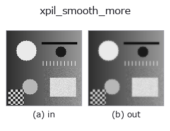

smoothing op• データ種: image → image
• 呼び出し: fullseye.apply(img, "xpil_smooth_more", a=0.5, b=0.5) (2-D は 1 画像 + 2 スカラつまみ a,b∈[0,1] のモデル)

*図は合成の入力 128×128 で実際に走らせた出力。左が入力、右が出力。点群は上から見た散布(明るさ = z)、1-D 列は折れ線、体積は z 方向の最大値投影、動画は中央フレーム、複素画像は振幅、絵にならない返り値は値そのもの。*
*つまみ a は出力を変えない(実測: 0.1 / 0.5 / 0.9 で同一)。*
*つまみ b は出力を変えない(実測: 0.1 / 0.5 / 0.9 で同一)。*
別の画像でも(合成シーン / 写真 / 硬貨。上段が入力、下段がその出力。つまみは既定):
▸ xpil_smooth_more: other inputs (docs site)
*4 列目はカラー (H,W,3) の入力。この op は色を跨がずに扱える(色チャネルを 3 本目の空間軸として畳み込まない)。*
Pillow の平滑化フィルタ（強め）。`PIL.ImageFilter.SMOOTH_MORE の固定カーネルで SMOOTH` よりも強くぼかす。
a, b は未使用（固定カーネル）。
カーネルは 5x5 の重み付き平均（中心 44、その 8 近傍が 5、最外周 16 画素が1、合計 100 で割る）。中心の重みが大きいので同じ 5x5 の一様平均よりぼけは弱く、インパルスは中心 44% + 隣接 8 画素 5% ずつに広がる程度（実測: 255 のインパルス → 中心 112、隣接 13、外周 0）。3x3 の `SMOOTH`（中心 5、近傍 1、合計 13）よりは広く効く。
入力は [0,1] に clip して `*255 の切り捨てで 8 ビット L 画像にし、出力を /255 で戻す（1/255 の量子化が入る）。画像の最外周 2 画素はPillow がフィルタせず入力値のまま。0 サイズの画像は ValueError で拒否され、fail-soft で入力のクリップ版に落ちる（台帳に記録）。ぼかし量を可変にしたいなら gaussian や median を使う。エッジ検出（xpil_contour /xpil_find_edges）や threshold` の前のノイズ落としに。
• gallery2d_smoothing_rank ファミリ ガイド
• サンプルデータ カタログ(DL URL / ライセンス) — 2-D は skimage.data(BSD/public)+ 合成、3-D は実データ源(Stanford/PDS 等)の DL URL。
• 演算子の来歴・参考文献 — この op 族の元になった研究/手法の出典。
• アルゴリズムの正典(著者・年)と用途は上記ファミリ使い方ガイドに記載。
下のプログラムは実際に走ることを確かめてある(図と同じ入力)。Studio のヘルプではこのブロックがボタンになり、その場で読み込んで実行できる。
xpil_smooth_more 0.35 0.50
▸ Load this pipeline · Load & run
• gallery2d_smoothing_rank — py -3.11 examples/gallery2d_smoothing_rank.py
image を入力に取れる)identity · gaussian · mean_box · bilateral · unsharp · median · min_filter · max_filter
smoothing)gaussian · mean_box · bilateral · unsharp · sk_tv · sk_wavelet · sk_rolling_ball · sk_nlm
*Provenance: ops.py — 2D operator registry. この per-op ノートは tools/opdocs.py md が自動生成(手編集しない)。*
© 2026 Kazufumi Furuse — Fullseye operator documentation. Licensed under Apache-2.0.
{kind=link}